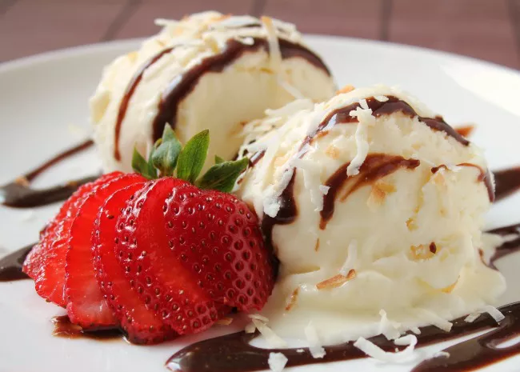

ICE CREAM
What is ice cream?
Ice cream is a frozen dessert typically made from milk or cream that has been flavoured with a sweetener, either sugar or an alternative, and a spice, such as cocoa or vanilla, or with fruit, such as strawberries or peaches. Food colouring is sometimes added in addition to stabilizers. The mixture is cooled below the freezing point of water and stirred to incorporate air spaces and prevent detectable ice crystals from forming. It can also be made by whisking a flavoured cream base and liquid nitrogen together. The result is a smooth, semi-solid foam that is solid at very low temperatures (below 2 °C or 35 °F). It becomes more malleable as its temperature increases.
Ice cream may be served in dishes, eaten with a spoon, or licked from edible wafer ice cream cones held by the hands as finger food. Ice cream may be served with other desserts—such as cake or pie—or used as an ingredient in cold dishes—like ice cream floats, sundaes, milkshakes, and ice cream cakes—or in baked items such as Baked Alaska.

Ingredients
- 1 cup granulated sugar
- 1 cup heavy cream
- 3 cups half-and-half
- Pinch salt
- 1 tablespoon vanilla extract (optional)
- 500ml milk
Equipments
- Bowls
- Measuring cups and spoons
- Saucepan
- Fine-mesh sieve
- Ice cream maker
- Freezer container
Instructions
- In a medium bowl, whisk together the egg yolks and half of the sugar. Set aside.
- In a medium saucepan, stir together the cream, half-and-half, salt, and remaining sugar. Heat the mixture over medium-high heat, stirring often, until it comes to a simmer, then reduce heat to medium.
- Add about 1/2 cup of the cream mixture to the egg mixture while whisking constantly (this helps prevent the eggs from cooking). Repeat with another 1/2 cup of the cream mixture.
-
Using a heatproof spatula, stir the cream mixture in the saucepan constantly as you pour the egg mixture into the pan.
- Cook, stirring constantly, until thickened and mixture coats the back of the spatula, 1 to 2 minutes longer. Remove from heat.
- Strain the mixture through a fine-mesh sieve into a clean bowl and whisk in the vanilla extract. Set the bowl in an ice bath and stir the base occasionally until it's cooled to room temperature. Remove the bowl from the ice bath, cover with plastic wrap, and refrigerate at least 2 to 4 hours or overnight before churning, either in an ice cream machine or by hand (see below for tips on how to churn ice cream).
- Enjoy your ice cream!!!